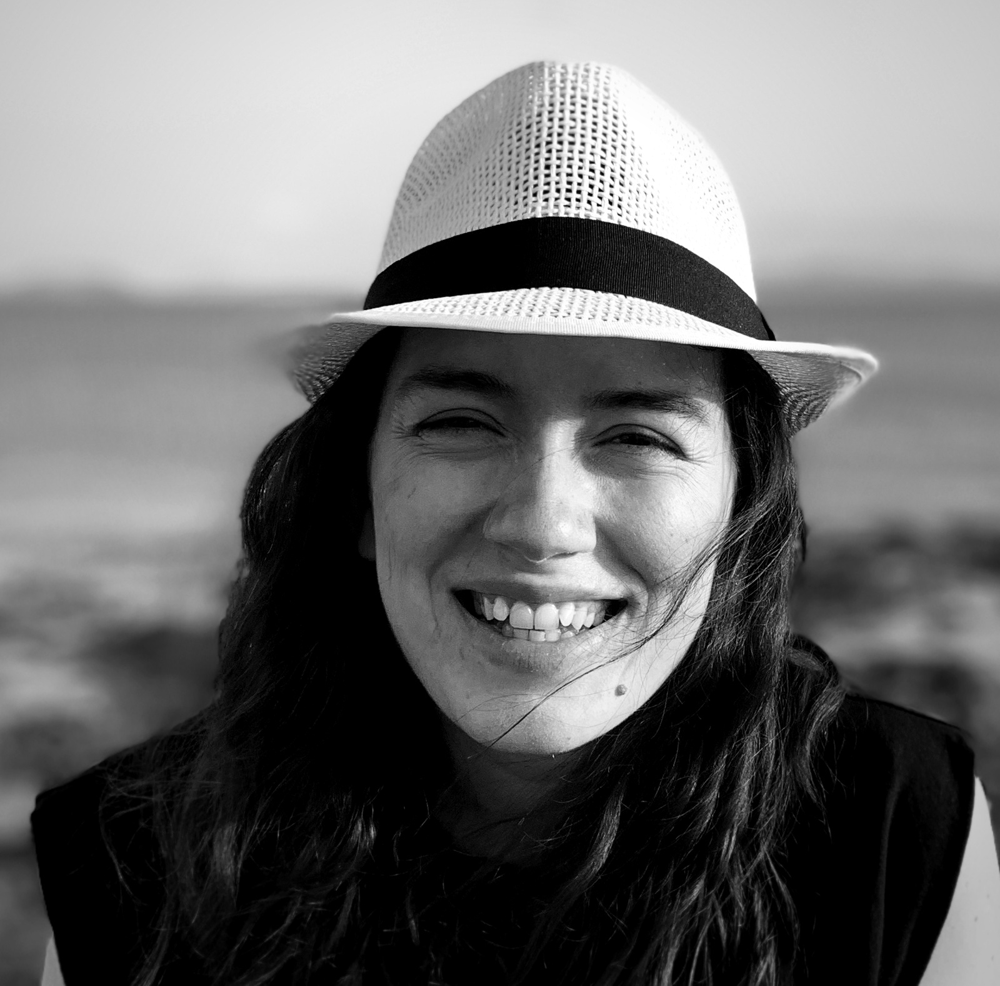
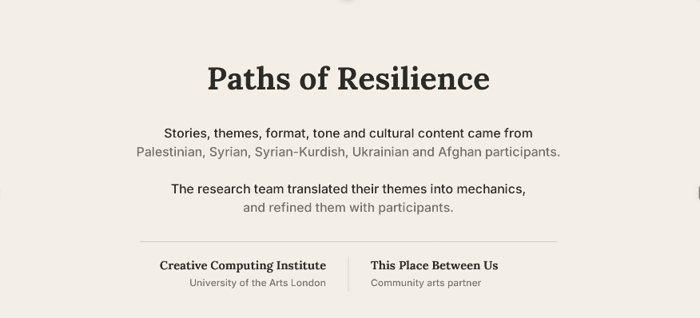
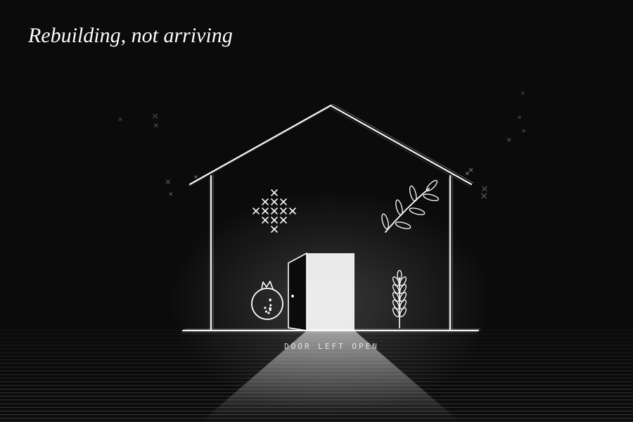
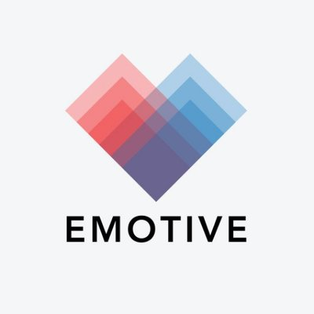
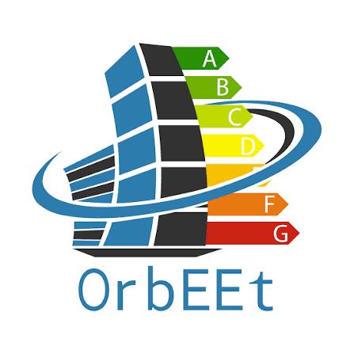
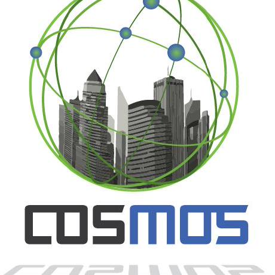

HeatLab
A live brief with Reos Partners for the Installation and Collaboration unit, ending in an exhibition of student work
Building immersive worlds and playful technologies together with the communities they are made for

Immersive technology, creative practice and social engagement
Dr Stella Doukianou studies how extended reality can help people think, feel and act differently about the world around them. Over the past decade she has developed interactive systems and games that link creativity with advanced computing to deepen participation and inclusion, specialising in XR, HCI and game design. Her approach is grounded in co‑creation and the belief that technology should enable rather than exclude
A Greek researcher and educator with a background in civil engineering and digital media, she received her PhD in Serious Games from the Serious Games Institute, Coventry University, and her MSc in Design and Digital Media from the University of Edinburgh. She has taught for around fifteen years, with a focus on hackathons, design sprints and ethical approaches to creative computing education
A live brief with Reos Partners for the Installation and Collaboration unit, ending in an exhibition of student work

A digital game co‑designed with Palestinian, Syrian, Syrian‑Kurdish, Ukrainian and Afghan participants, who shaped its stories, themes, tone and cultural content. The research team translated their themes into game mechanics and refined them together, to challenge stigma around refugee journeys

A knowledge exchange project and public exhibition curated with This Place Between Us, growing out of three co‑design workshops with refugee participants and a concept for a serious game aimed at destigmatisation

Emotionally resonant, interactive XR storytelling for cultural heritage and museums, a €2.6m Horizon 2020 project coordinated on behalf of EXUS

A serious game encouraging energy‑efficient behaviour in organisations through personalised digital feedback, led on behalf of the Serious Games Institute

IoT for smart cities, leading the London "Smart Heat and Electricity" scenario and its behavioural change framework on behalf of Hildebrand
Full list on UAL Research Online and dblp
Three doctoral completions and four current students working across extended reality, games, AI and digital identity
An XR coral reef game measuring conservation knowledge and empathy across mixed, virtual and augmented reality
Classical and medieval receptions in digital games, with a focus on Genshin Impact, bringing a background in history and games design
Embodied Soft‑Restorative Presence in a Social Robot
Virtual identity and non‑human avatars in XR, bridging fashion, digital art and generative AI through speculative co‑design
CEDAR, an augmented reality app for citizen science environmental data sensing, built through a participatory design framework
Multisensory XR to address the emotional and physical needs of skin hunger in lonely older adults
Learning by making, with real partners, real communities and an ethical lens on technology
Short intense making cycles that get students prototyping, testing and presenting from the first week
Community‑centred methods and ethical questions built into creative computing, from immersive media to AI
Students work on real briefs with studios and organisations, from Jason Bruges Studio to Reos Partners and Moth
Open to collaborations, live briefs and research partnerships
Creative Computing Institute, University of the Arts London, Greencoat Building, London